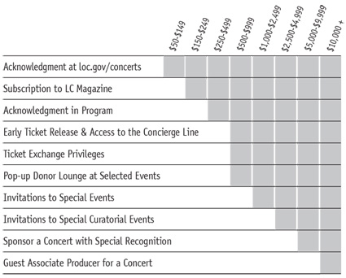

Related Resources
More Performing Arts on:
Your contributions enable the Library to continue its tradition of offering concerts free to the public today, tomorrow, and for future generations!
Consider making a gift today!
Make a charitable gift to the Library’s internationally recognized concert series featuring legendary artists from around the world. The Library needs your support to help grow, advance and make universally accessible its unparalleled performing arts programs.
Donor Recognition
Donors to the Library’s concert series (at various levels) are recognized through special programs for their commitment to enriching the patron experience.
Every donor at every level counts! Be a Friend of Music.
Ways to Give
Contact us by phone or email:
Contact Jan Lauridsen,
Assistant Chief, Music Division at 202-707-5503 | [email protected]
The Library of Congress, the nation’s oldest federal cultural institution, is the world’s preeminent reservoir of knowledge, providing unparalleled resources to Congress and the American people.
All donations to the Friends of Music are tax-deductible.
209-2020 Donors
Gift and trust funds
Julian E. and Freda Hauptman Berla Fund
Elizabeth Sprague Coolidge Foundation
William and Adeline Croft Memorial Fund
Da Capo Fund
Ira and Leonore Gershwin Fund
Isenbergh Clarinet Fund
Irving and Verna Fine Fund
Mae and Irving Jurow Fund
Carolyn Royall Just Fund
Kindler Foundation Trust Fund
Dina Koston and Robert Shapiro Fund for New Music
Boris and Sonya Kroyt Memorial Fund
Wanda Landowska/Denise Restout
Memorial Fund
Katie and Walter Louchheim Fund
Robert Mann Fund
McKim Fund
Norman P. Scala Memorial Fund
Karl B. Schmid Memorial Fund
Judith Lieber Tokel & George Sonneborn Fund
Anne Adlum Hull and William Remsen Strickland Fund
Rose and Monroe Vincent Fund
Gertrude Clarke Whittall Foundation
Various Donors Fund
Bequests
Sorab K. Modi
Donor contributions
Producer ($10,000 and above)
The Aaron Copland Fund for Music, Inc.
Ella Fitzgerald Charitable Foundation
Frederic J. and Lucia Hill
The Reva and David Logan Foundation
Adele M. Thomas Charitable Fund
Guarantor ($5,000 - $9,999)
Opera America
Mallory and Diana Walker
Underwriter ($2,500 - $4,999)
Yanne Norup-Schmidt
John Mineto Ono, in memory of Ronald Robert Ramey
Geraldine Ostrove
Joyce E. Palmer
Judith C. and Dr. Eldor O. Pederson
Mace Rosenstein and Louise de la Fuente
George Sonneborn and Rosina C. Iping
The George and Ruth Tretter Charitable Gift Fund, Carl Tretter, Trustee
Benefactor ($1,000 - $2,499)
William D. Alexander
Bill Bandas and Leslie G. Ford
Stephen and Louise Burton
Dr. Ronald M. Costell and Marsha E. Swiss, in memory of Dr. Giulio Cantoni & Mrs. Paula Saffiotti
Carole J. Falvo
Milton Grossman, in memory of Dana Krueger Grossman
Wilda M. Heiss, in memory of Norman Middleton
Randy Hostetler Living Room Music Project and Fund
Egon and Irene Marx
Arthur F. Purcell
James C. and Carol R. Tsang
Patron ($500 - $999)
Devora and Samuel Arbel
Leonard and Gabriela Bebchick
Peter and Ann Belenky
Dr. and Mrs. A. David Bernanke
Sandra J. Blake, in memory of Ronald Diehl
Elena Bloomstein
Marc H. and Vivian S. Brodsky
Kym Hemley and Joseph Butz, in honor of Bill Bandas
Margaret Choa
Diane Dixson
Richard W. Burris and Shirley Downs
Doris N. Celarier
Edward A. Celarier and Gail Yano
William A. Cohen, in memory of Barbara A. Mowat
Herbert L. and Joan M. Cooper
Lawrence W. Feinberg
Ann H. Franke and Daniel J. Alpert
Becky Jo Fredriksson and Rosa D. Wiener
Fred S. Fry, Jr.
Geraldine and Melvin C. Garbow
Howard Gofreed, in memory of Ruth Tretter
The Richard & Nancy Gould Family Fund
Margaret L. Hines
Sheila and John Hollis
Michael B. Jennison
Mary Lynne Martin
Winton E. Matthews, Jr.
Donogh McDonald
John and Eileen Miller
Undine A. and Carl. E Nash
Judith Neibrief
John P. O’Donnell
Allan Reiter
Bruce Rosenblum and Lori Laitman
Victor Roytburd
David Seidman and Ruth Greenstein
Rebecca and Sidney Shaw, in memory of Dr. Leonard G. Shaw
Christopher Sipes
Beverly and Philip Sklover
Maria Soto, in memory of Sara Arminana
Dana and Linda Sundberg
Lorna C. Totman, in memory of Daniel Gallik
Joan M. Undeland, in memory of Richard E. Undeland
Harvey Van Buren
Linus E. and Dolores R. Wallgren, in memory of Dana Krueger Grossman
Amy Weinstein and Phil Esocoff, in memory of Freda Berla
Sidney Wolfe and Suzanne Goldberg
Pan Zheng and Yang Liu
Sponsor ($250 - $499)
The Honorable Morton I. and Sheppie Abramowitz
Anonymous (2)
Eve E. Bachrach, in memory of Laurel and Linda Bergold
Gerald Cerny
Carl Ann Dyer
Laura Lee Fischer
Elizabeth Fulford and Gregory Scholtz, in memory of Francis Scholtz
Ted Hirakawa
Zona Hostetler
May Y. Ing
R. Bruce Johnston, in honor of Anton Babushka
Phyllis C. Kane
Mr. and Mrs. Kim Kowalewski
Thomas C. Kuchenberg, in memory of Geri (Miriam) Rosen
Kay and Marc Levinson
Sally H. McCallum
George P. Mueller
Heather Pinnock
Robert H. Reynolds
Irving and Juliet Sablosky
Jeff and Carolyn Serfass
John Davis Snyder
Alan Vollmann
Patricia A. Winston
Friends ( < $249)
Jeanne K. Aelion
Anonymous (4)
Anonymous, in memory of Thomas Germaine
Diane Arnkoff
Joseph Auslander and Barbara F. Meeker
Joyce E. Barnes
Franklin M. Bialostozky and Judith L. Shiffers
Edwin Berk
Marie E. Birnbaum
Donald L. Brown
The Caceres-Brown Family, in honor of the Biller-Kehlmann Family
Bruce Carlson
Nancie S. Coan
Kenneth Cohen
Larry D. Cohen
John E. Dixon, in memory of Irving Sablosky
Martin Donougho
Seith and Marion Eisen
Teri A. Fischer
Farley Fisher
Helene Freeman, in memory of Edward Schmeltzer
Jonathan Gershfeld
Barbara Glick
Gaby Gollub
Edward Gramlich
Bruce Green
Bruce N. Gregory and Paula Causey, in memory of Irving Sablosky
Elliott A. and Rosa D. Greher
Jeanette Helfrich
Carol Herwig
Jo Ann Hersh
Donna Hoffmeister
Bei-Lok B. Hu
William C. and Cecilie K. Jones
Jay and Francine Jupiter
Wilfrid and Kay Kohl
Douglas A. Land
Marianna Lee
Rachel E. Lynch, in memory of Mattiwilda Dobbs
Ramona H. Matthews
Anne C. Mattison
William McLeese
Eileen Mengers
William L. Montgomery and Steven K. Hays
Morton and Ruth Needelman, in honor of the Music Division staff
Mary K. O’Melveny
Deanna Pennington
Michael and Barbara Phillips
Dennis H. Reeder
Blair Reischer and Martha Bozman
Ann Schneider
Michael Schneider, in memory of Irving Lee Sablosky
Jo Ann Scott
Stanley M. and Claire R. Sherman
Anna Slomovic
Eugene and Grace Smoley
Bette A. Spencer
Robert Steen
Steven Steiner
Elaine Suriano
David Tannous
Frederik van Bolhuis
Alan Vollmann
Eric Wagner
George H. Walser, in memory of Charles Whittier
June T. and Robert M. Wolcott